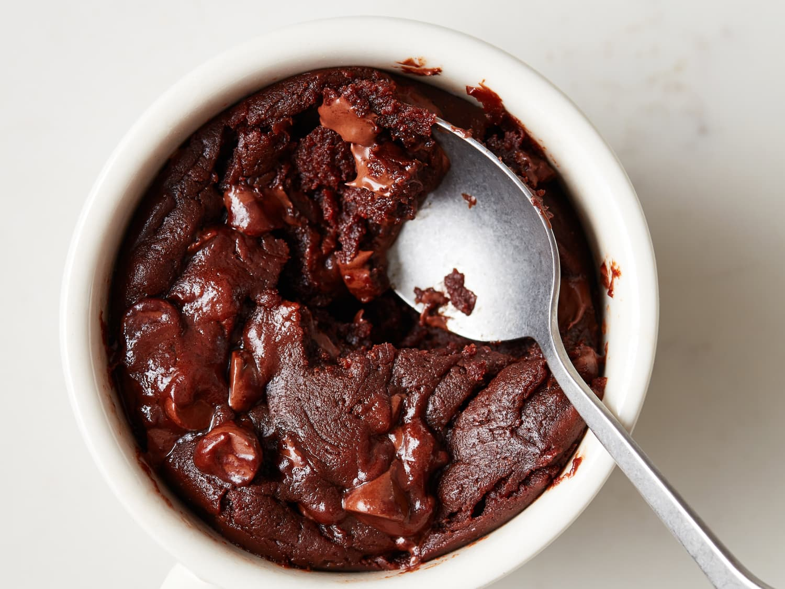

Dessert: Brownie in a mug

Ingredients
- 3 tablespoons brown sugar
- 3 tablespoons all-purpose flour
- 3 tablespoons cocoa powder
- Pinch of Salt
- 2 tablesoons melted butter
- 3 tablespoons milk
- 1/2 cup chocolate chips [or bluberries]
- [optional] icecream
Tools/Equipment
- 12 oz mug
Steps:
- Into mug, add flour, sugar, and pinch of salt
- Mix until fully combined
- Add melted butter and milk into mug
- Mix until thick brownie batter forms
- Add blue berries/chocolate chips into batter
- Put in microwave on high for 1 minute and 20 seconds. If not fully cooked, microwave foranother 20 seconds.
- Use spoon to enjoy